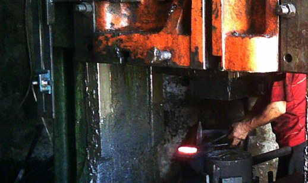

热锻
将加热后的钢铁在摩擦压力机和液压机上进行模锻，自由锻则使用锻锤完成。
1,000吨摩擦压力机 · 零件最重10公斤
土耳其伊斯坦布尔 · 创立于1975年
请发送图纸或样品。我们在自有模具车间制作模具，首件经您确认后批量生产并交货。可生产10克至10公斤的钢铁零件。

从锻造到钣金加工，所有工序均在同一工厂内完成。
将加热后的钢铁在摩擦压力机和液压机上进行模锻，自由锻则使用锻锤完成。
1,000吨摩擦压力机 · 零件最重10公斤
无需加热，在液压机上压制成形，尺寸精度高，减少机加工量。
40、100、150吨液压机 · 零件50克起
采用级进模对不锈钢板和黑皮钢板进行冲裁、冲孔、折弯和分切，一次冲程完成多道工序，适合批量生产。
不锈钢及黑皮钢板 · 零件10克起
锻造模具和冲裁模具均由自有模具车间制造和维护，模具磨损时生产不会中断。
车床、铣床、电火花加工、锯床
从首次沟通到发货，全程由同一团队负责。
请发送技术图纸、样品或照片，并注明材料、数量和公差。
我们确定零件采用热锻还是冷成形、使用哪台压力机，然后提供价格和交期。
在自有模具车间加工模具。
首批零件经测量后寄送给您，确认后才开始批量生产。
按约定批次生产并交货。
可在此查看各类零件对应的加工设备。另设有专门的模具维护车间。
| 设备 | 能力 | 数量 | 用途 |
|---|---|---|---|
| 摩擦压力机 | 1,000吨 | 1 | 热模锻，最重10公斤 |
| 液压机 | 150吨 | 2 | 热成形与冷成形 |
| 液压机 | 100吨 | 1 | 热成形与冷成形 |
| 液压机 | 40吨 | 1 | 小型零件成形 |
| 锻锤 | 100 kg | 1 | 自由锻 |
| 模具车间 | – | – | 车床、铣床、电火花加工、锯床 |
以下为本厂生产的零件示例。如需类似零件，只需发送照片即可。


Kumbasar Çelik Dövme于1975年在伊斯坦布尔乌姆拉尼耶创立，最初是一家手工具作坊。1990年投资压力机设备后，开始为建筑、汽车、农机配件和机械行业提供代工及批量锻件。
目前我们是一家年锻造能力2,000吨、自制模具的中型锻造企业。负责接单、模具加工和压力机操作的人员都在同一工厂内工作。
如需报价，请通过电子邮件或WhatsApp发送图纸或照片。也欢迎来厂参观。